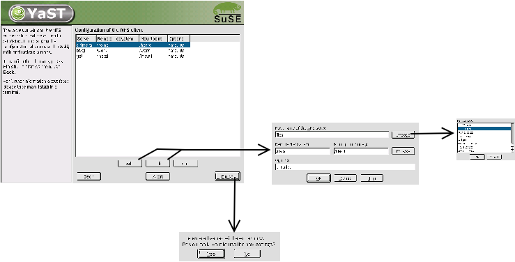
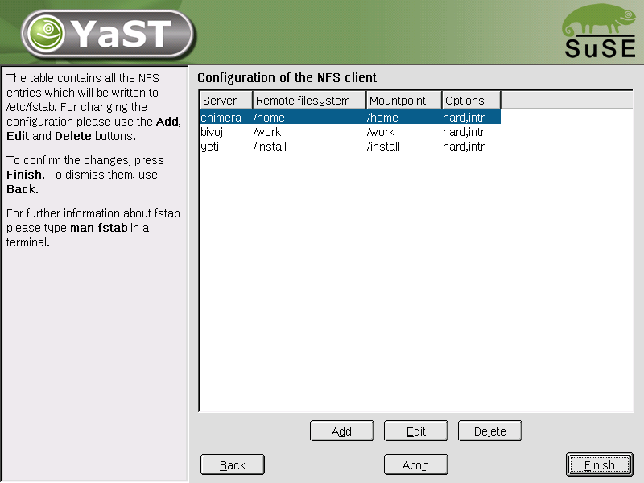
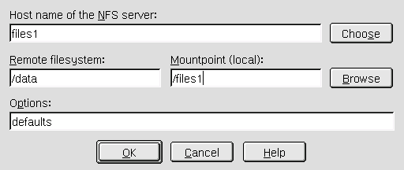
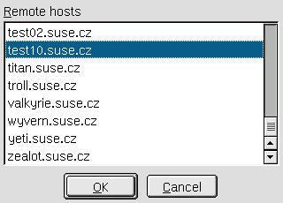

$Id$
Martin VidnerThe NFS config module manages those entries in the mount table (/etc/fstab) that are of the NFS type. It starts and stops the necessary init scripts: nfs and portmap.
A NFS server can be selected from a list of all hosts on the local network. A mount point can be selected in a browse dialog. The mount options are syntactically checked.
The main change is the removal of the first dialog, which used to have a radio button to enable/disable NFS mounts. Now disabling NFS mounts is done by leaving the NFS mount table empty.
The button 'New' has been renamed to 'Add' for consistency.
An 'Abort' button has been added.



